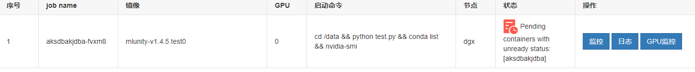
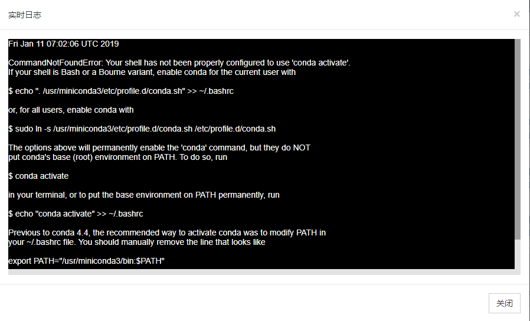

创建ML-Agents的Docker镜像
前言
如果需要在镜像中使用GPU训练,可以将Nvidia的官方镜像作为基础镜像,Dockerfile如下:1
2
3
4
5
6
7
8
9
10
11
12
13
14
15
16
17
18
19
20
21
22
23
24
25
26FROM nvidia/cuda:9.0-base-ubuntu16.04
LABEL maintainer "NVIDIA CORPORATION <cudatools@nvidia.com>"
ENV NCCL_VERSION 2.3.7
RUN apt-get update && apt-get install -y --no-install-recommends \
apt-utils \
cuda-libraries-$CUDA_PKG_VERSION \
cuda-cublas-9-0=9.0.176.4-1 \
libnccl2=$NCCL_VERSION-1+cuda9.0 && \
apt-mark hold libnccl2 && \
rm -rf /var/lib/apt/lists/*
RUN apt-get update && apt-get install -y openssh-server
RUN apt-get install -y nano
RUN mkdir /var/run/sshd
RUN echo "root:1234" | chpasswd
RUN sed -i 's/prohibit-password/yes/g' /etc/ssh/sshd_config
EXPOSE 22
ENTRYPOINT ["/usr/sbin/sshd","-D"]
ML-Agents v0.6.0

环境
本机环境
- ML-Agents 0.6.0
- Windows 10 专业版
- docker client version 18.09.0
- docker server version 18.09.0
平台
创建镜像
- 打开
~/ml-agents-0.6.0/目录,看到有一个官方给定的Dockerfile
- 直接
Build,在该目录下运行docker build -t [name]:[tag] .,一定要注意最后的.,很重要
- 新建一个
sources.list文件,为镜像内换源,因为将来有可能需要在容器内安装某些包,有一些国外的资源往往会下载失败,所以需要换源
- 新建一个
sources.list 用文本编辑器打开,写入以下内容

1
2
3
4
5
6
7
8
9
10
11
12
13
14
15
16
17
18# deb cdrom:[Ubuntu 16.04 LTS _Xenial Xerus_ - Release amd64 (20160420.1)]/ xenial main restricted
deb-src http://archive.ubuntu.com/ubuntu xenial main restricted #Added by software-properties
deb http://mirrors.aliyun.com/ubuntu/ xenial main restricted
deb-src http://mirrors.aliyun.com/ubuntu/ xenial main restricted multiverse universe #Added by software-properties
deb http://mirrors.aliyun.com/ubuntu/ xenial-updates main restricted
deb-src http://mirrors.aliyun.com/ubuntu/ xenial-updates main restricted multiverse universe #Added by software-properties
deb http://mirrors.aliyun.com/ubuntu/ xenial universe
deb http://mirrors.aliyun.com/ubuntu/ xenial-updates universe
deb http://mirrors.aliyun.com/ubuntu/ xenial multiverse
deb http://mirrors.aliyun.com/ubuntu/ xenial-updates multiverse
deb http://mirrors.aliyun.com/ubuntu/ xenial-backports main restricted universe multiverse
deb-src http://mirrors.aliyun.com/ubuntu/ xenial-backports main restricted universe multiverse #Added by software-properties
deb http://archive.canonical.com/ubuntu xenial partner
deb-src http://archive.canonical.com/ubuntu xenial partner
deb http://mirrors.aliyun.com/ubuntu/ xenial-security main restricted
deb-src http://mirrors.aliyun.com/ubuntu/ xenial-security main restricted multiverse universe #Added by software-properties
deb http://mirrors.aliyun.com/ubuntu/ xenial-security universe
deb http://mirrors.aliyun.com/ubuntu/ xenial-security multiverse保存退出
- 新建一个
DockerfilePlus,在官方生成的基础镜像上安装一些可以在平台上运行的包,openssh-server,联网工具net-tools,心爱的apt-file等等
- 新建一个
DockerfilePlus - 用文本编辑器打开,输入以下内容

1
2
3
4
5
6
7
8
9
10
11
12
13
14
15
16
17
18
19
20
21
22FROM hub.hoc.ccshu.net/wjs/mlunityv060:v0.1
RUN cp /etc/apt/sources.list /etc/apt/sources.list.bak
COPY sources.list /etc/apt/sources.list
ENV PYTHONPATH /ml-agents:$PYTHONPATH
RUN apt-get update && apt-get install -y \
apt-file \
nano \
net-tools \
iputils-ping \
openssh-server \
apt-utils \
&& rm -rf /var/lib/apt/lists/* \
&& mkdir /var/run/sshd \
&& echo "root:1234" | chpasswd \
&& sed -i 's/prohibit-password/yes/g' /etc/ssh/sshd_config
EXPOSE 22
ENTRYPOINT ["/usr/sbin/sshd","-D"]
- 在
DockerfilePlus所在文件夹下,执行build -t [name]:[tag] -f DockerfilePlus .
为了使用GPU.改写完的Dockerfile如下(不需要看):1
2
3
4
5
6
7
8
9
10
11
12
13
14
15
16
17
18
19
20
21
22
23
24
25
26
27
28
29
30
31
32
33
34
35
36
37
38
39
40
41
42
43
44
45
46
47
48
49
50
51
52
53
54
55
56
57
58
59
60
61
62
63
64
65
66
67
68
69
70
71
72
73
74
75
76
77
78
79
80
81
82
83
84
85
86
87
88
89
90
91
92
93
94
95
96
97
98
99
100
101
102
103
104
105
106
107
108
109
110
111
112
113
114
115
116
117
118
119
120
121
122
123
124
125
126
127
128
129
130
131
132
133
134
135
136
137
138
139
140
141
142
143
144
145
146
147
148
149
150
151
152
153
154
155
156
157
158
159
160
161FROM nvidia/cuda:9.0-base-ubuntu16.04
LABEL maintainer "Keavnn <https://stepneverstop.github.io>"
ENV NCCL_VERSION 2.3.7
RUN apt-get update && apt-get install -y --no-install-recommends \
apt-utils \
cuda-libraries-$CUDA_PKG_VERSION \
cuda-cublas-9-0=9.0.176.4-1 \
libnccl2=$NCCL_VERSION-1+cuda9.0 && \
apt-mark hold libnccl2 && \
rm -rf /var/lib/apt/lists/*
# ensure local python is preferred over distribution python
ENV PATH /usr/local/bin:$PATH
# http://bugs.python.org/issue19846
# > At the moment, setting "LANG=C" on a Linux system *fundamentally breaks Python 3*, and that's not OK.
ENV LANG C.UTF-8
# runtime dependencies
RUN apt-get update && apt-get install -y --no-install-recommends \
ca-certificates \
libexpat1 \
libffi6 \
libgdbm3 \
libreadline6 \
libsqlite3-0 \
libssl1.0.0 \
&& rm -rf /var/lib/apt/lists/*
ENV GPG_KEY 0D96DF4D4110E5C43FBFB17F2D347EA6AA65421D
ENV PYTHON_VERSION 3.6.4
RUN set -ex \
&& buildDeps=" \
dpkg-dev \
gcc \
libbz2-dev \
libc6-dev \
libexpat1-dev \
libffi-dev \
libgdbm-dev \
liblzma-dev \
libncursesw5-dev \
libreadline-dev \
libsqlite3-dev \
libssl-dev \
make \
tcl-dev \
tk-dev \
wget \
xz-utils \
zlib1g-dev \
# as of Stretch, "gpg" is no longer included by default
$(command -v gpg > /dev/null || echo 'gnupg dirmngr') \
" \
&& apt-get update && apt-get install -y $buildDeps --no-install-recommends && rm -rf /var/lib/apt/lists/* \
\
&& wget -O python.tar.xz "https://www.python.org/ftp/python/${PYTHON_VERSION%%[a-z]*}/Python-$PYTHON_VERSION.tar.xz" \
&& wget -O python.tar.xz.asc "https://www.python.org/ftp/python/${PYTHON_VERSION%%[a-z]*}/Python-$PYTHON_VERSION.tar.xz.asc" \
&& export GNUPGHOME="$(mktemp -d)" \
&& gpg --keyserver ha.pool.sks-keyservers.net --recv-keys "$GPG_KEY" \
&& gpg --batch --verify python.tar.xz.asc python.tar.xz \
&& rm -rf "$GNUPGHOME" python.tar.xz.asc \
&& mkdir -p /usr/src/python \
&& tar -xJC /usr/src/python --strip-components=1 -f python.tar.xz \
&& rm python.tar.xz \
\
&& cd /usr/src/python \
&& gnuArch="$(dpkg-architecture --query DEB_BUILD_GNU_TYPE)" \
&& ./configure \
--build="$gnuArch" \
--enable-loadable-sqlite-extensions \
--enable-shared \
--with-system-expat \
--with-system-ffi \
--without-ensurepip \
&& make -j "$(nproc)" \
&& make install \
&& ldconfig \
\
&& apt-get purge -y --auto-remove $buildDeps \
\
&& find /usr/local -depth \
\( \
\( -type d -a \( -name test -o -name tests \) \) \
-o \
\( -type f -a \( -name '*.pyc' -o -name '*.pyo' \) \) \
\) -exec rm -rf '{}' + \
&& rm -rf /usr/src/python
# make some useful symlinks that are expected to exist
RUN cd /usr/local/bin \
&& ln -s idle3 idle \
&& ln -s pydoc3 pydoc \
&& ln -s python3 python \
&& ln -s python3-config python-config
# if this is called "PIP_VERSION", pip explodes with "ValueError: invalid truth value '<VERSION>'"
ENV PYTHON_PIP_VERSION 9.0.3
RUN set -ex; \
\
apt-get update; \
apt-get install -y --no-install-recommends wget; \
rm -rf /var/lib/apt/lists/*; \
\
wget -O get-pip.py 'https://bootstrap.pypa.io/get-pip.py'; \
\
apt-get purge -y --auto-remove wget; \
\
python get-pip.py \
--disable-pip-version-check \
--no-cache-dir \
"pip==$PYTHON_PIP_VERSION" \
; \
pip --version; \
\
find /usr/local -depth \
\( \
\( -type d -a \( -name test -o -name tests \) \) \
-o \
\( -type f -a \( -name '*.pyc' -o -name '*.pyo' \) \) \
\) -exec rm -rf '{}' +; \
rm -f get-pip.py
RUN apt-get update && apt-get -y upgrade
# xvfb is used to do CPU based rendering of Unity
RUN apt-get install -y xvfb
COPY ml-agents /ml-agents
WORKDIR /ml-agents
RUN pip install .
# port 5005 is the port used in in Editor training.
EXPOSE 5005
RUN cp /etc/apt/sources.list /etc/apt/sources.list.bak
COPY sources.list /etc/apt/sources.list
ENV PYTHONPATH /ml-agents:$PYTHONPATH
RUN apt-get update && apt-get install -y \
apt-file \
nano \
net-tools \
iputils-ping \
openssh-server \
apt-utils \
&& rm -rf /var/lib/apt/lists/* \
&& mkdir /var/run/sshd \
&& echo "root:1234" | chpasswd \
&& sed -i 's/prohibit-password/yes/g' /etc/ssh/sshd_config
EXPOSE 22
ENTRYPOINT ["/usr/sbin/sshd","-D"]
PUSH镜像
docker push [name]:[tag]
测试镜像
- 登录机器学习平台,没有使用平台的可以在本地使用
docker run直接开启容器 - 先测试使用容器的方式
- 创建容器

将要运行和储存的文件夹放在数据卷data下,这个目录要在运行时由--docker-target-name指定 - 等待容器创建成功

- 容器创建成功后进入容器

- 执行
mlagents-learn trainer_config.yaml --docker-target-name=data/unity-volume --env=3dball --train --run-id=test --save-freq=5000 | tee /data/unity-volume/log.txt,如果不想在屏幕输出,可以在后边加上>/dev/null

- 创建容器
安装Miniconda
确保你的安装包放在了data文件夹下apt-get update && apt-get install bzip2 -y && cd /data && bash Miniconda3-latest-Linux-x86_64.sh
一路按回车、yes等等就成功了.如果需要安装到指定目录,在安装过程中会有提示告诉你让你指定安装路径
注意
在学校机器学习平台上使用时,如果是使用容器的方式,那么新开的容器就可以使用conda命令,不存在conda:command not found的错误信息.
但是,如果在平台上以提交任务的形式来使用带conda的镜像所产生的容器时,就算是在镜像中配置了echo 'export PATH="~/anaconda3/bin:$PATH"' >> ~/.bashrc,当提交任务时环境变量中仍然没有~/anaconda3/bin,这个问题目前没有找到比较方便的解决办法,目前所采用的方式是:
在提交任务时, 首先加上命令export PATH="~/anaconda3/bin:$PATH" &&

接着又实验了一下echo 'export PATH="~/anaconda3/bin:$PATH"' >> /etc/profile, 正常来说, 如果在容器中这样设置环境变量, 等待下次从镜像创建容器时, 这个环境变量一般并不会生效, 但是不知道这样设置对于提交任务方式来说有没有效, 索性试了一下

根据输出日志来看, 这种方式也并没有奏效

当然, 如果觉得上述配置比较麻烦的话,可以使用Dockerfile的ENV命令来设置环境变量, 这样设置99%是不会有问题的
1 | FROM hub.hoc.ccshu.net/wjs/mlunityv060:v1.4.5 |
实验了一下,
结果如下:

表示可以使用conda命令, 但是不能使用conda activate命令激活环境
根据错误信息, 在Dockerfile中写入以下代码也不可行:
RUN ln -s /usr/miniconda3/etc/profile.d/conda.sh /etc/profile.d/conda.sh
查了一下相关资料,发现在4.5版本的conda是无解的
https://github.com/ContinuumIO/docker-images/issues/89

希望4.6版本可以解决吧
更新2019年1月14日14:26:01
已解决
4.6版本的确可以解决以提交任务模式运行时的问题, 需要使用命令conda run -n [环境名字] [要执行的命令], 而不是使用conda activate [环境名字]先激活一个环境.
不过, 更新至4.6版本需要相关配置1
2conda config --add channels conda-canary
conda update conda
我使用Dockerfile来生成镜像, 代码如下:1
2
3
4FROM hub.hoc.ccshu.net/wjs/mlunityv060:v1.4.6
ENV PATH /usr/miniconda3/bin:$PATH
RUN conda config --add channels conda-canary && conda update conda -y
原因是, 使用Dockerfile比较容易设置环境变量, 减少出错